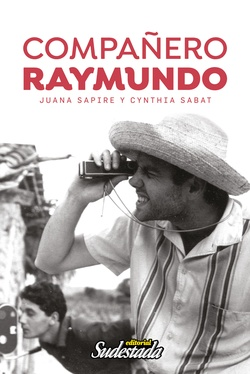

Buscar
la biografía de Raymundo Gleyzer
El proyecto de escritura de este libro nació a fines de 2010, cuando Juana Sapire viajó desde Nueva York a Buenos Aires para testimoniar por primera vez por la desaparición de su marido, Raymundo Gleyzer. Se presentó en los tribunales de Comodoro Py, en el marco de la causa por el Centro Clandestino de Detención El Vesubio, último destino conocido de Gleyzer tras su secuestro, en mayo de 1976. En esa ocasión, la periodista Cynthia Sabat acompañó a Juana a dar su testimonio, y estuvo junto a ella en todo el proceso. En esos días surgió su propuesta de escribir un libro que plasmara por primera vez su visión de la historia vivida junto a Raymundo y el grupo Cine de la Base.
Edición Especial N° 26
Compañero Raymundo
Cuadernos de Sudestada
Comprar edición impresaSumario
- la biografía de Raymundo Gleyzer
- Juana Sapire y Cynthia Sabat
- Un fragmento de Compañero Raymundo
- Comprá Compañero Raymundo x internet
Compartir Articulo
Sobre Compañero Raymundo
El proyecto de escritura de este libro nació a fines de 2010, cuando Juana Sapire viajó desde Nueva York a Buenos Aires para testimoniar por primera vez por la desaparición de su marido, Raymundo Gleyzer. Se presentó en los tribunales de Comodoro Py, en el marco de la causa por el Centro Clandestino de Detención El Vesubio, último destino conocido de Gleyzer tras su secuestro, en mayo de 1976. En esa ocasión, la periodista Cynthia Sabat acompañó a Juana a dar su testimonio, y estuvo junto a ella en todo el proceso. En esos días surgió su propuesta de escribir un libro que plasmara por primera vez su visión de la historia vivida junto a Raymundo y el grupo Cine de la Base.
Cynthia viajó a Nueva York dos veces, en febrero de 2011 y en enero de 2014, y convivió con ella para registrar su testimonio. Allí conserva y preserva el rico archivo de Raymundo, que contiene las fotos que ilustran este volumen y documentos tales como cartas, guiones, contratos de distribución y notas periodísticas que se han utilizado como fuente para la presente investigación, parte de los cuales se han transcripto en forma textual. Se trata de un material valiosísimo que por primera vez es publicado en formato de libro.
Este trabajo fue enriquecido con los testimonios de familiares, amigos y compañeros de Raymundo que compartieron momentos clave de su vida y su obra.
Sobre Raymundo Gleyzer
Nació en Buenos Aires en 1941. Creció en el seno de una familia de actores de origen judío, y de joven se interesó en la fotografía y en la política. Estudió cine en la Escuela de Bellas Artes de La Plata, y dejó los estudios para viajar al nordeste brasileño a filmar su primer cortometraje, La tierra quema (1964). Trabajó como cronista y camarógrafo para el noticiero Telenoche de Canal 13, programa para el que produjo entre otras Nota sobre Cuba y Nuestras Islas Malvinas (elegida como el impacto periodístico del año 1966).
Dirigió films etnográficos, como Ceramiqueros de Traslasierra (1965) y Pictografías del Cerro Colorado (1965). Trabajó junto a Jorge Prelorán en Ocurrido en Hualfín (1966) y, tras varios años de viajes por Europa, llegó a México para filmar su primer largometraje: México, la revolución congelada (1971). El documental fue prohibido en la Argentina, y logró estrenarserecién en 1973.Su compromiso político lo llevó a unirse al PRT-ERP, partido enrolado en la izquierda revolucionaria que se identificó con los ideales de la Revolución Cubana. En 1971 dirigió Swift, comunicado filmado de una acción exitosa del partido que tomó estado público: el secuestro del cónsul inglés y su canje por comida y mejores condiciones laborales para los trabajadores del frigorífico. Más tarde dirigió Ni olvido ni perdón, film urgente sobre un hecho quemarcó simbólicamente el comienzo del terrorismo de Estado en la Argentina: la fuga del penal de Rawson y la Masacre de Trelew, el 22 de agosto de 1972.
Raymundo Gleyzer creó el grupo Cine de la Base como forma de "colectivizar la inteligencia".Conformado originalmente por Juana Sapire,Alvaro Melián, Nerio Barberis, Alberto Vales y Jorge Santa Marina entre otros, el grupo produjo su película más ambiciosa: Los traidores (1973).Se trata de una ficción basada en hechos reales que disecciona el funcionamiento de la burocracia sindical a través de la transformación de un líder obrero en un sindicalista corrupto.La película que desafiaba los tabúes políticos de la época fue exhibida en festivales internacionales, pero proyectada en condiciones de clandestinidad en sindicatos, fábricas, comedores y barrios humildes. Hoy es considerada como una obra cumbre del cine político latinoamericano.
En 1974 el grupo filmó Me matan si no trabajo, y si trabajo me matan, sobre la huelga obrera en la fábrica INSUD, donde los trabajadores morían por contaminación por plomo en la sangre. Gleyzer ya era considerado internacionalmente como una de las voces más innovadoras y comprometidas del movimiento de cine militante latinoamericano que surgió en el continente enlos años 70. El 27 de mayo de 1976 fue secuestrado en Buenos Aires por la dictadura militar, yllevado al campo de detención El Vesubio donde fue torturado. Aún hoy continúa desaparecido. En 2011 y 2014 los juicios contra El Vesubio culminaron con la sentencia a sus responsables tras 35 años de impunidad.
Los miembros de Cine de la Base se exiliaron en distintos países; parte del grupo que se refugió en Lima, Perú produjo junto a Jorge Denti Las AAA son las tres armas (1977).La Alianza Anticomunista Argentina (conocida como la Triple A) fue una organización paramilitar que se dedicó al secuestro y asesinato de militantes populares.A partir del golpe de estado de 1976 los militares argentinos superaron ampliamente esta modalidad represiva, "desapareciendo" a más de 30.000 personas. En esta trágica lista se encuentra el periodista y escritor Rodolfo Walsh, quien 24 horas antes de ser secuestrado publicó la Carta Abierta de un Escritor a la Junta Militar, en la cual se basó el film.
Envíos a todo el país y al exterior escribiendo a sudestadarevista@yahoo.com.ar
o por mensaje privado en FB
Revista y Editorial Sudestada
Comprá con Tarjeta o Rapipago para que te llegue a domicilio

Comentarios
Colectivo editorial Sudestada
Articulos más vistos


LIBRERÍA SUDESTADA

Colección infantil

Distribuidora de Libros

Suscripción

Sudestada en URUGUAY

Otros articulos de esta edición
 Las autoras
Las autoras
Juana Sapire y Cynthia Sabat
JUANA SAPIRE nació en Rosario en 1943. Estudió en la ACE (Asociación de Cine Experimental) y, tras conocer a Raymundo, ...
Un fragmento de Compañero Raymundo
El sábado 29 de mayo de 1976 por la mañana sonó el teléfono en lo de Greta Gleyzer. Era Alicia, ...